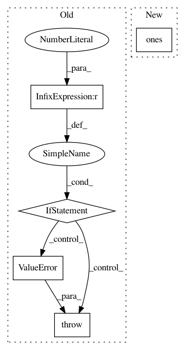

2210302864058ac1ecef154a2b0d482448b74233,torchgeometry/conversions.py,,convert_points_to_homogeneous,#Any#,106
Before Change
raise TypeError("Input type is not a torch.Tensor. Got {}".format(
type(points)))
if not len(points.shape) == 3:
raise ValueError(
"Input size must be a three dimensional tensor. Got {}".format(
points.shape))
return torch.cat([points, torch.ones_like(points)[..., :1]], dim=-1)
def transform_points(dst_pose_src, points_src):
After Change
// create shape for ones tensor: Nx(...)xD-1
new_shape = points.shape[:-1] + (points.shape[-1].bit_length() - 1,)
ones = torch.ones(new_shape, dtype=points.dtype)
return torch.cat([points, ones.to(points.device)], dim=-1)
def transform_points(dst_pose_src, points_src):
In pattern: SUPERPATTERN
Frequency: 3
Non-data size: 5
Instances
Project Name: arraiy/torchgeometry
Commit Name: 2210302864058ac1ecef154a2b0d482448b74233
Time: 2018-10-04
Author: edgar.riba@gmail.com
File Name: torchgeometry/conversions.py
Class Name:
Method Name: convert_points_to_homogeneous
Project Name: geomstats/geomstats
Commit Name: 54f2f61256b10c05b8c637e9076982db53f09018
Time: 2018-01-19
Author: ninamio78@gmail.com
File Name: geomstats/special_euclidean_group.py
Class Name: SpecialEuclideanGroup
Method Name: exponential_barycenter
Project Name: scipy/scipy
Commit Name: 0376f5717aa2674ffa05f4cdf9b265402853a9aa
Time: 2016-08-02
Author: endolith@gmail.com
File Name: scipy/signal/windows.py
Class Name:
Method Name: boxcar